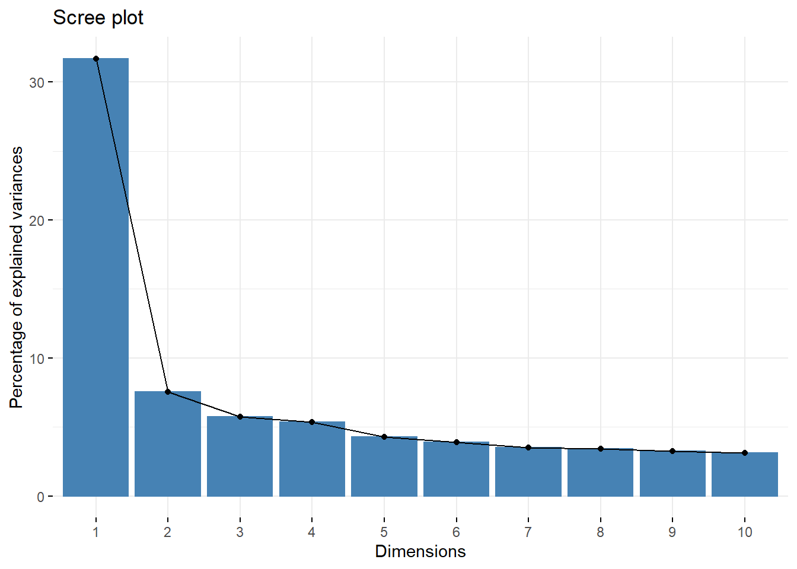

Chapter 8 Factor
8.1 Principal Component Analysis
An example from Field (2018 pp. 795-796):
“I have noticed that a lot of students become very stressed about SPSS Statistics. Imagine that I wanted to design a questionnaire to measure a trait that I termed ‘SPSS anxiety’. I devised a questionnaire to measure various aspects of students’ anxiety towards learning SPSS, the SAQ. I generated questions based on interviews with anxious and non-anxious students and came up with 23 possible questions to include. Each question was a statement followed by a five-point Likert scale: ‘strongly disagree’, ‘disagree’, ‘neither agree nor disagree’, ‘agree’ and ‘strongly agree’ (SD, D, N, A and SA, respectively). What’s more, I wanted to know whether anxiety about SPSS could be broken down into specific forms of anxiety. In other words, what latent variables contribute to anxiety about SPSS? With a little help from a few lecturer friends I collected 2571 completed questionnaires.”
8.1.1 Results Overview
| JASP | SPSS | SAS | Minitab | R | |
|---|---|---|---|---|---|
| SS Loading (Factor1) | 3.0336 | 3.033 | 3.034 | NA | 3.03 |
| SS Loading (Factor2) | 2.8545 | 2.855 | 2.855 | NA | 2.85 |
| SS Loading (Factor3) | 1.9859 | 1.986 | 1.986 | NA | 1.99 |
| SS Loading (Factor4) | 1.4351 | 1.435 | 1.435 | NA | 1.44 |
8.1.2 JASP

Figure 8.1: JASP Output for Principal Component Analysis
8.1.3 SPSS
DATASET ACTIVATE DataSet1.
FACTOR
/VARIABLES Question_01 Question_02 Question_03 Question_04 Question_05 Question_06 Question_07
Question_08 Question_09 Question_10 Question_11 Question_12 Question_13 Question_14 Question_15
Question_16 Question_17 Question_18 Question_19 Question_20 Question_21 Question_22 Question_23
/MISSING LISTWISE
/ANALYSIS Question_01 Question_02 Question_03 Question_04 Question_05 Question_06 Question_07
Question_08 Question_09 Question_10 Question_11 Question_12 Question_13 Question_14 Question_15
Question_16 Question_17 Question_18 Question_19 Question_20 Question_21 Question_22 Question_23
/PRINT INITIAL ROTATION
/PLOT EIGEN
/CRITERIA MINEIGEN(1) ITERATE(25)
/EXTRACTION PC
/CRITERIA ITERATE(25)
/ROTATION VARIMAX
/METHOD=CORRELATION.
Figure 8.2: SPSS Output for Principal Component Analysis

Figure 8.3: SPSS Output for Principal Component Analysis
8.1.4 SAS
PROC FACTOR Data=work.PCA scree
Nfactors= 4
Method= p
Rotate=varimax;
Var Q1 Q2 Q3 Q4 Q5 Q6 Q7 Q8 Q9 Q10 Q11 Q12 Q13 Q14 Q15 Q16 Q17 Q18 Q19 Q20 Q21 Q22 Q23
;
Run;
Figure 8.4: SAS Output for Principal Component Analysis

Figure 8.5: SAS Output for Principal Component Analysis

Figure 8.6: SAS Output for Principal Component Analysis
8.1.5 Minitab

Figure 8.7: Minitab Output for Principal Component Analysis

Figure 8.8: Minitab Output for Principal Component Analysis

Figure 8.9: Minitab Output for Principal Component Analysis
8.1.6 R
## install.packages("psych")
## install.packages("factoextra")
## Principal Component Analysis
library("psych")##
## Attaching package: 'psych'## The following object is masked from 'package:car':
##
## logit## Loading required package: ggplot2##
## Attaching package: 'ggplot2'## The following objects are masked from 'package:psych':
##
## %+%, alpha## Welcome! Want to learn more? See two factoextra-related books at https://goo.gl/ve3WBafit1 <- prcomp(PCA.data, scale = TRUE) #eigenvalues
eig.val <- get_eigenvalue(fit1)
eig.val ## print results## eigenvalue variance.percent cumulative.variance.percent
## Dim.1 7.2900471 31.695857 31.69586
## Dim.2 1.7388287 7.560125 39.25598
## Dim.3 1.3167515 5.725007 44.98099
## Dim.4 1.2271982 5.335644 50.31663
## Dim.5 0.9878779 4.295121 54.61175
## Dim.6 0.8953304 3.892741 58.50449
## Dim.7 0.8055604 3.502436 62.00693
## Dim.8 0.7828199 3.403565 65.41050
## Dim.9 0.7509712 3.265092 68.67559
## Dim.10 0.7169577 3.117207 71.79280
## Dim.11 0.6835877 2.972121 74.76492
## Dim.12 0.6695016 2.910876 77.67579
## Dim.13 0.6119976 2.660859 80.33665
## Dim.14 0.5777377 2.511903 82.84855
## Dim.15 0.5491875 2.387772 85.23633
## Dim.16 0.5231504 2.274567 87.51089
## Dim.17 0.5083962 2.210418 89.72131
## Dim.18 0.4559399 1.982347 91.70366
## Dim.19 0.4238036 1.842624 93.54628
## Dim.20 0.4077909 1.773004 95.31929
## Dim.21 0.3794799 1.649912 96.96920
## Dim.22 0.3640223 1.582705 98.55191
## Dim.23 0.3330618 1.448095 100.00000
fit2 <- principal(PCA.data, nfactors=4, rotate = "varimax") #varimax rotiation
fit2 ## print results## Principal Components Analysis
## Call: principal(r = PCA.data, nfactors = 4, rotate = "varimax")
## Standardized loadings (pattern matrix) based upon correlation matrix
## RC3 RC1 RC4 RC2 h2 u2 com
## ï..Question_01 0.24 0.50 0.36 0.06 0.43 0.57 2.4
## Question_02 -0.01 -0.34 0.07 0.54 0.41 0.59 1.7
## Question_03 -0.20 -0.57 -0.18 0.37 0.53 0.47 2.3
## Question_04 0.32 0.52 0.31 0.04 0.47 0.53 2.4
## Question_05 0.32 0.43 0.24 0.01 0.34 0.66 2.5
## Question_06 0.80 -0.01 0.10 -0.07 0.65 0.35 1.0
## Question_07 0.64 0.33 0.16 -0.08 0.55 0.45 1.7
## Question_08 0.13 0.17 0.83 0.01 0.74 0.26 1.1
## Question_09 -0.09 -0.20 0.12 0.65 0.48 0.52 1.3
## Question_10 0.55 0.00 0.13 -0.12 0.33 0.67 1.2
## Question_11 0.26 0.21 0.75 -0.14 0.69 0.31 1.5
## Question_12 0.47 0.52 0.09 -0.08 0.51 0.49 2.1
## Question_13 0.65 0.23 0.23 -0.10 0.54 0.46 1.6
## Question_14 0.58 0.36 0.14 -0.07 0.49 0.51 1.8
## Question_15 0.46 0.22 0.29 -0.19 0.38 0.62 2.6
## Question_16 0.33 0.51 0.31 -0.12 0.49 0.51 2.6
## Question_17 0.27 0.22 0.75 -0.04 0.68 0.32 1.5
## Question_18 0.68 0.33 0.13 -0.08 0.60 0.40 1.5
## Question_19 -0.15 -0.37 -0.03 0.43 0.34 0.66 2.2
## Question_20 -0.04 0.68 0.07 -0.14 0.48 0.52 1.1
## Question_21 0.29 0.66 0.16 -0.07 0.55 0.45 1.5
## Question_22 -0.19 0.03 -0.10 0.65 0.46 0.54 1.2
## Question_23 -0.02 0.17 -0.20 0.59 0.41 0.59 1.4
##
## RC3 RC1 RC4 RC2
## SS loadings 3.73 3.34 2.55 1.95
## Proportion Var 0.16 0.15 0.11 0.08
## Cumulative Var 0.16 0.31 0.42 0.50
## Proportion Explained 0.32 0.29 0.22 0.17
## Cumulative Proportion 0.32 0.61 0.83 1.00
##
## Mean item complexity = 1.8
## Test of the hypothesis that 4 components are sufficient.
##
## The root mean square of the residuals (RMSR) is 0.06
## with the empirical chi square 4006.15 with prob < 0
##
## Fit based upon off diagonal values = 0.968.1.7 Remarks
The rotation used was “Varimax”. All differences in results between the software are due to rounding.
8.1.8 References
Field, A. (2018). Discovering statistics using IBM SPSS statistics. Los Angeles, CA: SAGE.
8.2 Exploratory Factor Analysis
An example from Field (2018 pp. 795-796):
“I have noticed that a lot of students become very stressed about SPSS Statistics. Imagine that I wanted to design a questionnaire to measure a trait that I termed ‘SPSS anxiety’. I devised a questionnaire to measure various aspects of students’ anxiety towards learning SPSS, the SAQ. I generated questions based on interviews with anxious and non-anxious students and came up with 23 possible questions to include. Each question was a statement followed by a five-point Likert scale: ‘strongly disagree’, ‘disagree’, ‘neither agree nor disagree’, ‘agree’ and ‘strongly agree’ (SD, D, N, A and SA, respectively). What’s more, I wanted to know whether anxiety about SPSS could be broken down into specific forms of anxiety. In other words, what latent variables contribute to anxiety about SPSS? With a little help from a few lecturer friends I collected 2571 completed questionnaires.”
8.2.1 Results Overview
| JASP | SPSS | SAS | Minitab | R | |
|---|---|---|---|---|---|
| SS Loading (Factor1) | 3.0336 | 3.033 | 3.034 | NA | 3.03 |
| SS Loading (Factor2) | 2.8545 | 2.855 | 2.855 | NA | 2.85 |
| SS Loading (Factor3) | 1.9859 | 1.986 | 1.986 | NA | 1.99 |
| SS Loading (Factor4) | 1.4351 | 1.435 | 1.435 | NA | 1.44 |
8.2.2 JASP

Figure 8.10: JASP Output for Exploratory Factor Analysis

Figure 8.11: JASP Output for Exploratory Factor Analysis

Figure 8.12: JASP Output for Exploratory Factor Analysis
8.2.3 SPSS
FACTOR
/VARIABLES Question_01 Question_02 Question_03 Question_04 Question_05 Question_06 Question_07
Question_08 Question_09 Question_10 Question_11 Question_12 Question_13 Question_14 Question_15
Question_16 Question_17 Question_18 Question_19 Question_20 Question_21 Question_22 Question_23
/MISSING LISTWISE
/ANALYSIS Question_01 Question_02 Question_03 Question_04 Question_05 Question_06 Question_07
Question_08 Question_09 Question_10 Question_11 Question_12 Question_13 Question_14 Question_15
Question_16 Question_17 Question_18 Question_19 Question_20 Question_21 Question_22 Question_23
/PRINT INITIAL KMO EXTRACTION ROTATION
/CRITERIA MINEIGEN(1) ITERATE(25)
/EXTRACTION PAF
/CRITERIA ITERATE(25)
/ROTATION VARIMAX
/METHOD=CORRELATION.
Figure 8.13: SPSS Output for Exploratory Factor Analysis

Figure 8.14: SPSS Output for Exploratory Factor Analysis
8.2.4 SAS
PROC FACTOR Data=work.efa scree
Nfactors= 4
Method= prinit
Rotate=varimax;
Var Q1 Q2 Q3 Q4 Q5 Q6 Q7 Q8 Q9 Q10 Q11 Q12 Q13 Q14 Q15 Q16 Q17 Q18 Q19 Q20 Q21 Q22 Q23
;
Run;
Figure 8.15: SAS Output for Exploratory Factor Analysis

Figure 8.16: SAS Output for Exploratory Factor Analysis
8.2.5 Minitab
Exploratory Factor Analysis with Principal Axis Factoring is not available in Minitab.
8.2.6 R
## install.packages("psych")
## Principal Axis Factor Analysis
library("psych")
fit <- factor.pa(EFA.data, nfactors=4, rotate = "varimax")## Warning: factor.pa is deprecated. Please use the fa function with fm=pa## Factor Analysis using method = pa
## Call: factor.pa(r = EFA.data, nfactors = 4, rotate = "varimax")
## Unstandardized loadings (pattern matrix) based upon covariance matrix
## PA1 PA3 PA4 PA2 h2 u2 H2 U2
## ï..Question_01 0.50 0.22 -0.27 0.00 0.37 0.63 0.37 0.63
## Question_02 -0.21 -0.03 -0.01 0.46 0.26 0.74 0.26 0.74
## Question_03 -0.50 -0.18 0.16 0.40 0.47 0.53 0.47 0.53
## Question_04 0.53 0.28 -0.25 -0.03 0.42 0.58 0.42 0.58
## Question_05 0.44 0.27 -0.19 -0.05 0.30 0.70 0.30 0.70
## Question_06 0.05 0.75 -0.12 -0.10 0.59 0.41 0.59 0.41
## Question_07 0.36 0.56 -0.16 -0.13 0.49 0.51 0.49 0.51
## Question_08 0.22 0.15 -0.76 0.00 0.65 0.35 0.65 0.35
## Question_09 -0.13 -0.07 -0.06 0.56 0.34 0.66 0.34 0.66
## Question_10 0.14 0.38 -0.14 -0.12 0.20 0.80 0.20 0.80
## Question_11 0.24 0.27 -0.69 -0.17 0.63 0.37 0.63 0.37
## Question_12 0.51 0.40 -0.11 -0.15 0.45 0.55 0.45 0.55
## Question_13 0.29 0.56 -0.23 -0.14 0.47 0.53 0.47 0.53
## Question_14 0.39 0.49 -0.15 -0.13 0.42 0.58 0.42 0.58
## Question_15 0.28 0.38 -0.25 -0.20 0.32 0.68 0.32 0.68
## Question_16 0.54 0.28 -0.25 -0.16 0.46 0.54 0.46 0.54
## Question_17 0.29 0.27 -0.64 -0.05 0.58 0.42 0.58 0.42
## Question_18 0.37 0.61 -0.14 -0.13 0.54 0.46 0.54 0.46
## Question_19 -0.28 -0.15 0.06 0.38 0.24 0.76 0.24 0.76
## Question_20 0.46 0.04 -0.09 -0.20 0.27 0.73 0.27 0.73
## Question_21 0.59 0.26 -0.15 -0.15 0.47 0.53 0.47 0.53
## Question_22 -0.03 -0.16 0.07 0.47 0.25 0.75 0.25 0.75
## Question_23 0.03 -0.04 0.07 0.33 0.12 0.88 0.12 0.88
##
## PA1 PA3 PA4 PA2
## SS loadings 3.03 2.85 1.99 1.44
## Proportion Var 0.13 0.12 0.09 0.06
## Cumulative Var 0.13 0.26 0.34 0.40
## Proportion Explained 0.33 0.31 0.21 0.15
## Cumulative Proportion 0.33 0.63 0.85 1.00
##
## Standardized loadings (pattern matrix)
## item PA1 PA3 PA4 PA2 h2 u2
## ï..Question_01 1 0.50 0.22 -0.27 0.00 0.37 0.63
## Question_02 2 -0.21 -0.03 -0.01 0.46 0.26 0.74
## Question_03 3 -0.50 -0.18 0.16 0.40 0.47 0.53
## Question_04 4 0.53 0.28 -0.25 -0.03 0.42 0.58
## Question_05 5 0.44 0.27 -0.19 -0.05 0.30 0.70
## Question_06 6 0.05 0.75 -0.12 -0.10 0.59 0.41
## Question_07 7 0.36 0.56 -0.16 -0.13 0.49 0.51
## Question_08 8 0.22 0.15 -0.76 0.00 0.65 0.35
## Question_09 9 -0.13 -0.07 -0.06 0.56 0.34 0.66
## Question_10 10 0.14 0.38 -0.14 -0.12 0.20 0.80
## Question_11 11 0.24 0.27 -0.69 -0.17 0.63 0.37
## Question_12 12 0.51 0.40 -0.11 -0.15 0.45 0.55
## Question_13 13 0.29 0.56 -0.23 -0.14 0.47 0.53
## Question_14 14 0.39 0.48 -0.15 -0.13 0.42 0.58
## Question_15 15 0.28 0.38 -0.25 -0.20 0.32 0.68
## Question_16 16 0.54 0.28 -0.25 -0.16 0.46 0.54
## Question_17 17 0.30 0.27 -0.64 -0.05 0.58 0.42
## Question_18 18 0.37 0.61 -0.14 -0.13 0.54 0.46
## Question_19 19 -0.28 -0.15 0.06 0.37 0.24 0.76
## Question_20 20 0.47 0.04 -0.09 -0.20 0.27 0.73
## Question_21 21 0.60 0.26 -0.15 -0.15 0.47 0.53
## Question_22 22 -0.03 -0.16 0.07 0.47 0.25 0.75
## Question_23 23 0.03 -0.04 0.07 0.33 0.12 0.88
##
## PA1 PA3 PA4 PA2
## SS loadings 3.03 2.85 1.99 1.44
## Proportion Var 0.13 0.12 0.09 0.06
## Cumulative Var 0.13 0.26 0.34 0.40
## Cum. factor Var 0.33 0.63 0.85 1.00
##
## Mean item complexity = 1.8
## Test of the hypothesis that 4 factors are sufficient.
##
## The degrees of freedom for the null model are 253 and the objective function was 7.55 with Chi Square of 19334.49
## The degrees of freedom for the model are 167 and the objective function was 0.46
##
## The root mean square of the residuals (RMSR) is 0.03
## The df corrected root mean square of the residuals is 0.03
##
## The harmonic number of observations is 2571 with the empirical chi square 880.48 with prob < 2.3e-97
## The total number of observations was 2571 with Likelihood Chi Square = 1166.49 with prob < 2.1e-149
##
## Tucker Lewis Index of factoring reliability = 0.921
## RMSEA index = 0.048 and the 90 % confidence intervals are 0.046 0.051
## BIC = -144.8
## Fit based upon off diagonal values = 0.99
## Measures of factor score adequacy
## PA1 PA3 PA4 PA2
## Correlation of (regression) scores with factors 0.83 0.86 0.86 0.77
## Multiple R square of scores with factors 0.69 0.73 0.74 0.59
## Minimum correlation of possible factor scores 0.37 0.46 0.49 0.198.2.7 Remarks
The method used was “Principal Axis Factoring” and the rotation used was “Varimax”. All differences in results between the software are due to rounding.
8.2.8 References
Field, A. (2018). Discovering statistics using IBM SPSS statistics. Los Angeles, CA: SAGE.